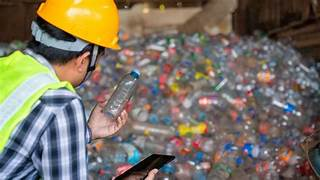

El Proceso de Transformación
Nuestro laboratorio transforma el plástico recuperado en material 100% reciclado y de alta calidad, cerrando el ciclo de la contaminación.
Recolección y Clasificación
El material llega a nuestras instalaciones limpio y ya clasificado por tipo, maximizando su valor.
Trituración y Lavado Profundo
El plástico se tritura en pequeñas escamas o pellets y se somete a un lavado industrial para eliminar sales, orgánicos y contaminantes residuales.
Fusión y Peletizado
El material se funde a altas temperaturas y se extruye en filamentos para crear nuevos gránulos (resina 100% reciclada) listos para la manufactura.
Moldeado y Diseño Final
La resina se inyecta en moldes de diseño exclusivo o se hila para textiles, dando vida a nuestros productos finales con sello de impacto.
Calidad, Larga Vida Útil y Precio Accesible
Nuestra inversión en tecnología de punta garantiza que el plástico reciclado no pierda propiedades. Esto nos permite ofrecer **productos de alta calidad, resistentes y de larga vida útil** que compiten en el mercado, ayudando a las personas a evitar el consumismo constante.

Explora Nuestros Productos de Uso Cotidiano
Desde Tote Bags y Hoodies hasta Cepillos y Libretas. ¡Tu compra financia la siguiente limpieza!
Ver Productos De La Tienda